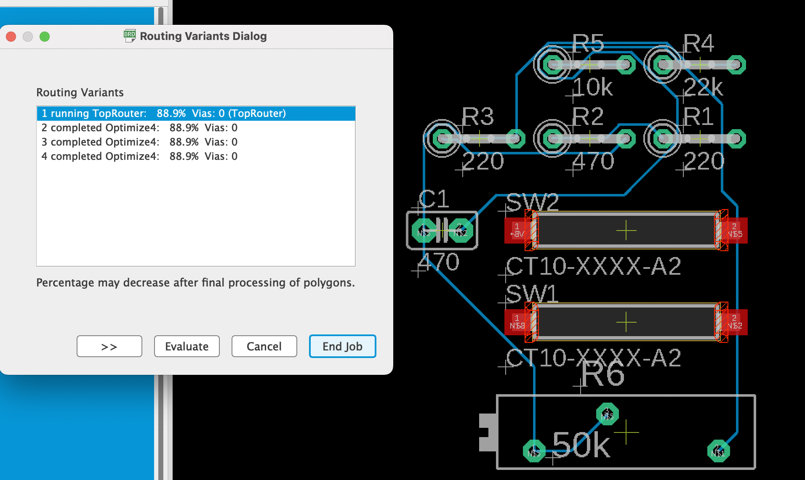
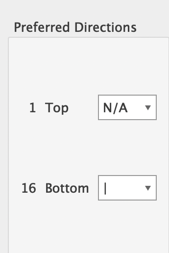

Autorouter
-
Spustíme autorouter Tools/Auto na automatické vygenerovanie vodičov. Na záložke General/Všeobecné nastavíme Preferred Direction/Preferovaný smer ; voľba N/A zakáže generovať vodiče na danej strane dosky pri jednostrannom PS zakážeme stranu súčiastok TOP voľbou N/A a nastavíme napr.zvislý smer na strane spojov BOTTOM×Ak chceme vrátiť vzdušné spoje späť, použijeme príkaz RIPUP , buď jednotlivo, alebo na vopred definovanej skupine príkazom GROUP, alebo všetky naraz klinkutím na ikonu a napísaním bodkočiarky ; do príkazového riadku a potvrdením Enter .